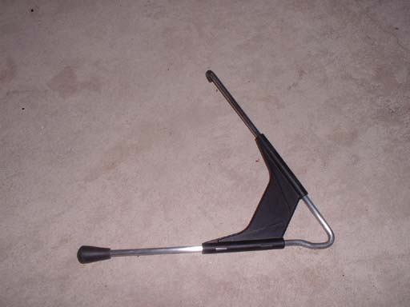

Painting the Virtual Boy
Painting the Virtual BoyHere's a short how-to for painting your Virtual Boy. It is fairly easy, but it is very time consuming and addictive, so don't say I didn't warn you.
First, you should sand the pieces smooth (using a fine sandpaper - I think I used 400 grit) and spray them with a sandable primer. Then lightly sand smooth and spray with primer again a couple times until you have a good base of primer on there (and is really smooth). Of course you don't HAVE to use primer, but it helps the paint stick and will give the paint a smoother look (and be more durable).
Then you should decide on the colors you want to go with. To start with I went with an all red VB, with a black knob and slider. so just spray a couple of light even coats of the color of choice as your base color onto your VB.
Then after you're done that step, it should look something like this... then you will want to spray a couple of coats of clear over top and lightly sand smooth with very fine sandpaper to give you the nice glossy look, and after a couple of coats of clear, you should paint any trim that you want to paint (do it after a couple of coats of clear because if you get any paint on the clear, you can just lightly sand it off, but if you try sanding your original paint, you will gouge the paint and look bad).
This is after a couple of coats of clear, I painted the trim like I wanted, then to finish the whole thing off, just spray a couple more coats of clear sand the next to last one VERY smooth (I used 2000 grit sandpaper) then spray one final coat of clear and you will be done.
Unfortunately, I never got this one completely done since I ran out of clear before my last coat, so I went out and bought a different brand of clear, and either the new stuff was cheap or the old stuff was cheap and the new stuff was eating away at it, but for some reason right when I sprayed it on, it started cracking the paint :-( . Of course I was mad that after getting the thing practically completely done it does this, but now I'm doing something different (I didn't really like the all red look anyway). I was going to try to fix it and repaint it the same way, but when the clear cracked, it made a lot of uneven surfaces, and it would have taken a LOT of sanding or completely stripping it back down to the bare plastic (which I didn't feel like doing). So basically the moral of the story... DONT CHANGE BRANDS OF PAINT IN THE MIDDLE OF THE PROJECT!!!
So I went and got some Hammered Metal spray paint. The VB was already cracked and rough looking, and the hammered metal just looked like the best way out of this (covers up the imperfections WELL). This is still in progress, so I'll put up some finished pics in the next update.

And here's a closeup of the texture.
Sanding the Stand
I wanted to do something cool with the stand, but I couldn't think of what color would look good to paint it, so I decided that a smooth bare metal would look nice, so sanded all the paint off and made it a smooth bare steel stand.
First I took off all the paint with a fairly coarse sandpaper (I believe that I used 220 grit), then went back with a pick to scratch away any paint that was left in any molding grooves (sandpaper doesn't get in the grooves very well). At this point you don't want to make any large gouges, but don't worry about scratching the metal. After getting all the paint off the stand, go over it again with the course sandpaper to make sure to smooth out any large scratches, then go to a finer sandpaper (I used 400 grit) and sanded the stand down more until it had a smooth shine, then the last time over it was with a VERY fine sandpaper (I used 2000 grit). You should go over it with that until there are no noticible scratches on the stand and you are happy with the shine. If you want to really get into this, you can get a metal polish and really shine this up, but that's up to you.

Here it is put together. I haven't decided on the color of the support yet, but I like the shine of the stand (the pictures really don't show it very well... looks a lot better in person).
{kind=link}